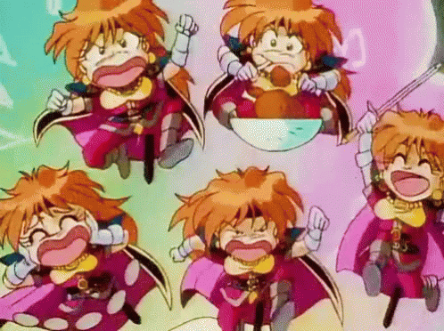

mutuals !

credits !
sataLanding page:
background art -
by pafica
music -
So Kawaii!! - Mario Artist Talent Studio by Nintendo
sataSightings page:
font -
"VT323" by Peter Hull
camera -
hosted by minerch.com
sataTV page:
TV and pikachu ripped from -
Pokemon Channel (GameCube) by Ambrella / Nintendo / The Pokémon Company
all channels hosted from -
Imgur.com
videos edited using -
Davinci Resolve
(full credits for each video channel included in imgur link)
sataCredits page:
credits font -
Slackside One by Maniackers Design
background gif -
from kare kano, by GAINAX
misc:
shake text -
made using shake art, by nokoi
site hosted by -
github.com
site written with -
Notepad++
(any javascript snippets referenced from other sources credited in source comments)
everythign else by sata light (: